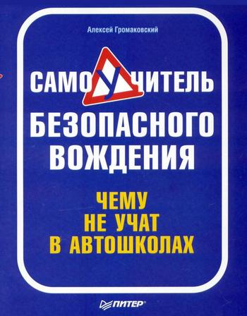

Самоучителей вождения существует много, но среди них нет ни
одного столь полезного, как тот, который вы держите в руках. Ведь эта
книга не только поможет освоить и усовершенствовать водительские навыки,
научит, как трогаться с места, парковаться и т. п. Вы узнаете еще и о
том, чему не учат в автошколах: об «автоподставах», о грамотном
поведении при ДТП, о том, что делать, если вашу машину утянул эвакуатор,
о способах вождения неисправного автомобиля, о правилах ночного
вождения, о «тайном языке» водителей и о многом другом.
По материалам очень полезной книги Алексея Громаковского
" Самоучитель безопасного вождения. Чему не учат в автошколах "
"Покупайте бумажную копию этой книги и храните ее в бардачке вместе с ПДД !!! "